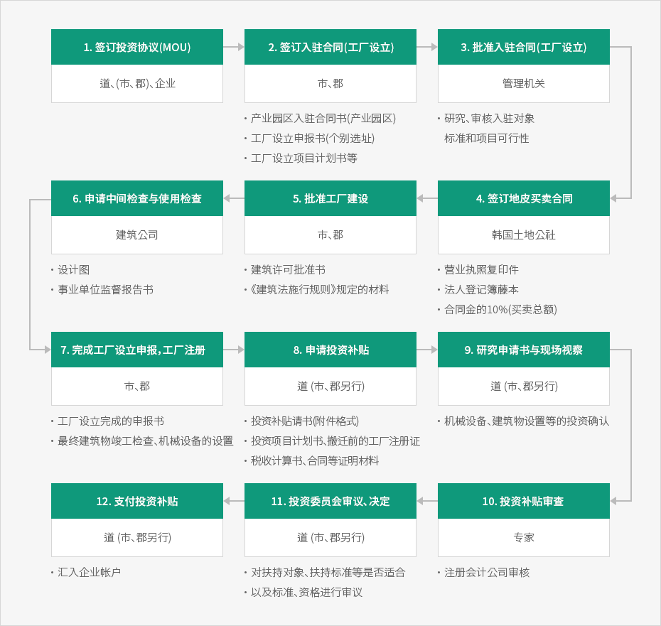

投资补助金的支付程序
- Home
- 投资指南
- 投资补助金的支付程序


- 签订投资协议(MOU) : 道、(市、郡)、企业
- 签订入驻合同(工厂设立) : 市、郡
- 产业园区入驻合同书(产业园区)
- 工厂设立申报书(个别选址)
- 工厂设立项目计划书等
- 批准入驻合同(工厂设立) : 管理机关 - 研究、审核入驻对象标准和项目可行性
- 签订地皮买卖合同 : 韩国土地公社 -
- 营业执照复印件
- 法人登记簿藤本
- 合同金的10%(买卖总额)
- 批准工厂建设 : 市、郡 -
- 建筑许可批准书
- 《建筑法施行规则》规定的材料
- 申请中间检查与使用检查 : 建筑公司 -
- 设计图
- 事业单位监督报告书
- 完成工厂设立申报，工厂注册 : 市、郡 -
- 工厂设立完成的申报书
- 最终建筑物竣工检查、机械设备的设置
-
- 申请投资补贴 : 道(市、郡另行) -
- 投资补贴请书(附件格式)
- 投资项目计划书、搬迁前的工厂注册证
- 税收计算书、合同等证明材料
- 研究申请书与现场视察 : 道(市、郡另行) - 机械设备、建筑物设置等的投资确认
- 投资补贴审查 : 专家 - 注册会计公司审核
- 投资委员会审议、决定 : 道(市、郡另行) -
- 对扶持对象、扶持标准等是否适合，
- 以及标准、资格进行审议
- 支付投资补贴 : 道(市、郡另行) - 汇入企业帐户

※ 关于对旅游项目投资的扶持通过“全罗北道旅游项目投资促进委员会”(文化体育旅游局)的审议来进行。